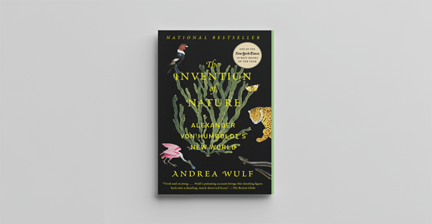
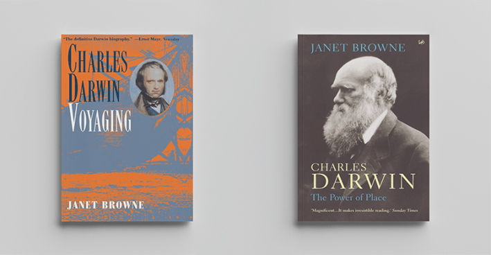
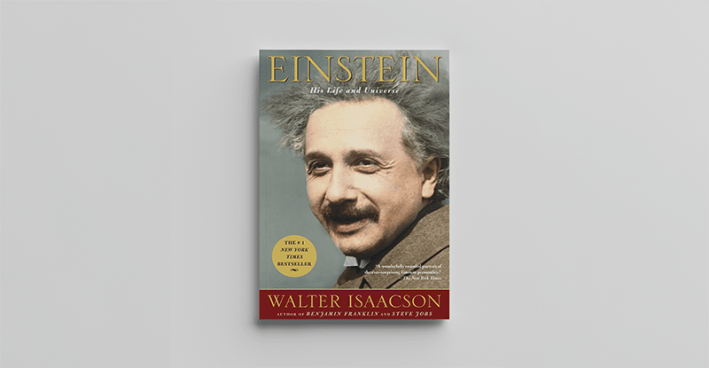
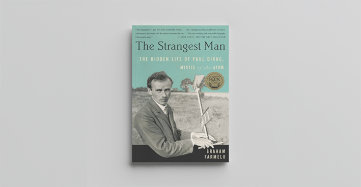
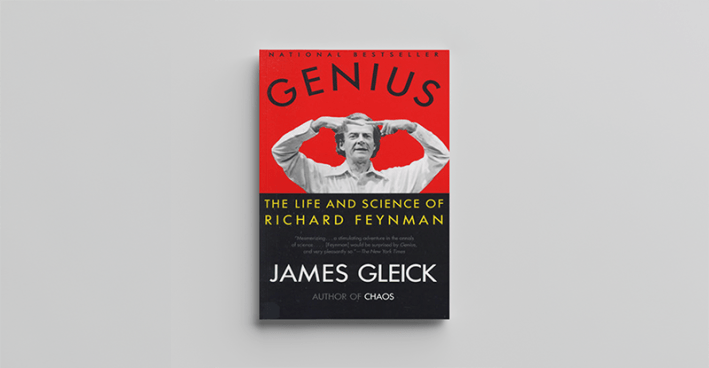

Is time travel possible? You can have heady fun delving into the debate that echoes from the writings of Kurt Godel, Stephen Hawking, and Albert Einstein. The answer, by the way, is yes, no, maybe. But there is one form of time travel that always feels real and thrilling—a totally engaging biography. You live inside the life and times of a person who saw the world as nobody else did. You walk the streets where they lived and feel the people and cultures, loves and trials, that made and unmade them. This list of beautifully composed biographies is our invitation to travel back in time and be dazzled by scientists who stretched the boundaries of their fields and thought and humanity themselves. Welcome. It’s a four-century tour.
Galileo’s Daughter: A Historical Memoir of Science, Faith, and Love by Dava Sobel

Penguin Random House
You don’t really know Galileo until you meet him through the eyes of his oldest daughter, Maria Celeste, the name she adopted for herself in the convent where she was consigned for her short life, in honor of her father’s illumination of the stars. Sobel portrays the 16th-century astronomer, inventor, and rebel against Catholic doctrine in all his scientific glory. But Sobel goes where no biographer has gone before in capturing the gentle sides of Galileo by introducing readers to Maria Celeste and spotlighting her warm letters to her father, full of questions about astronomy and her own supple insights into it.
The Invention of Nature: Alexander von Humboldt’s New World by Andrea Wulf

Penguin Random House
The title of Wulf’s book about 19th-century Prussian explorer and writer Alexander von Humboldt is the giveaway to its originality and timeliness. Today we take for granted the veracity of ecology, the interrelationship among species, as a key trait of life and survival. But it was Humboldt, a bold adventurer, who cast this Earthly principle into the world. It seeded the evolutionary biology of Charles Darwin and environmental philosophy of Henry David Thoreau. And what a character. “Fascinated by scientific instruments, measurements and observations, he was driven by a sense of wonder,” Wulf writes. “He could be vain, but would also give his last money to a struggling young scientist.”
Charles Darwin: Voyaging and Charles Darwin: The Power of Place by Janet Browne

Princeton University Press and Penguin Random House
Speaking of perhaps the most world-shattering scientist of all time, you can certainly read Darwin’s The Voyage of the Beagle, On the Origin of Species, and The Descent of Man on their own. And we all should. Once you settle into the rhythms of the Victorian prose, you become immersed in Darwin’s lucent observations, so uncanny and exciting, and the hours of the modern day slip by. But if you want to put it all in perspective, truly understand how Darwin got to the insights he did, who and what experiences influenced him, and what the cultural and social impact of his science was and is, then it’s time for this utterly magnificent two-volume biography by Browne, a British historian of science.
The Professor and the Madman: A Tale of Murder, Insanity, and the Making of the Oxford English Dictionary by Simon Winchester
HarperCollins Publishers
The science of lexicography is fascinating. And not just because it’s about how words make the cut for a dictionary. It’s also about how words get infused with meaning and who infuses them. There’s no more amazing tale of lexicography than this 19th-century origin story of the Oxford English Dictionary. Winchester recreates the relationship between OED director James Murray and William Chester Minor, a Civil War surgeon who submitted more than 10,000 quotations with possible new entries for the dictionary, sent from his incarceration in an asylum for the criminally insane. How a “madman” understood language so deeply is a remarkable neurological story on its own. But ultimately a look into the enigmatic depths of humanity.
Einstein: His Life and Universe by Walter Isaacson

Simon & Schuster
Isaacson’s achievement is to make you feel you know Einstein and understand his breakthroughs as if you were reading a novel not a textbook. You experience Einstein’s emotions over his theories and equations. When his calculations for the theory of relativity proved to be correct, “I was beside myself with joyous excitement,” he wrote to a friend. And who doesn’t like personal touches about an icon? By 1907 Einstein had “devised a revolutionary quantum theory of light,” Isaacson writes, “upended the concept of space and time, and produced what would become science’s best-known equation.” That year, tired of his drudge work in a patent office, he thought about becoming an electric-device salesman. His wife Mileva Maric told a friend, “My husband often spends his free time at home just playing with the boy,” his first son, Hans.
The Strangest Man: The Hidden Life of Paul Dirac, Mystic of the Atom by Graham Farmelo

Hachette Book Group
Venturing into the mind of Dirac, “one of the pre-eminent pioneers of quantum mechanics,” just in the wake of Einstein, is a startling and compelling experience. What lurks behind the facade of the expressionless man? Farmelo peels back the onion layers one story at a time. Revolutionary physicist Niels Bohr, who called Dirac “a complete logical genius”—Dirac would work out the equation for the behavior of electrons and predict antimatter—recalls visiting an art gallery with Dirac to look at impressionistic paintings. Looking at a boat sketched with a few lines, Dirac remarked, “This boat looks as if it was not finished.” Of another painting, the mathematically precise Dirac said, “I like that because the degree of inaccuracy is the same all over.” Of all the people who had visited his institute, Bohr said, Dirac was “the strangest man.”
Genius: The Life and Science of Richard Feynman by James Gleick

Penguin Random House
Ladies and gentlemen, Richard Feynman. The charismatic and preternaturally confident Nobel laureate in physics is the flipside of the emotionally distant Dirac, Feynman’s scientific hero. Feynman, the prodigal protege, would later work out one of Dirac’s recondite hypotheses on a blackboard. (He would do the same with a Hawking thesis about black-hole radiation.) Like all good biographies, Genius gets beneath the myth to meet the man. If you only know Feynman by his wiseacre reputation and his surprisingly popular collection of lectures and talks, Surely You’re Joking, Mr. Feynman!, you will be moved most of all by his tender love and care for his first wife Arline, who died at 25 of tuberculosis, and her lifelong presence in his memory.
A Feeling for the Organism: The Life and Work of Barbara McClintock by Evelyn Fox Keller
Macmillan Publishers
Barbara McClintock, who won the 1983 Nobel Prize in Physiology or Medicine for her discovery that genetic elements can change positions on a chromosome, which causes genes to be active or inactive, just seemed like the coolest person to know. She died at age 90 in 1992. When Keller, herself a scientist, first ventured to Cold Spring Harbor to interview McClintock in 1978 about her work and women in science, McClintock said she couldn’t see how she was interesting or representative of women. She never married, had kids, or had any interest in “decorating the torso.” She was a born rebel and remained one throughout her career, you learn from her own words in Keller’s book. In her Nobel acceptance speech, McClintock said that being an outcast didn’t create personal difficulties, it “proved to be a delight. It allowed complete freedom to continue investigations without interruption.”
Vera Rubin: A Life by Jacqueline Mitton and Simon Mitton
Harvard University Press
An astrophysicist renowned for confirming the presence of dark matter in the rotation of galaxies in the 1970s, Rubin led a very different personal life than McClintock. For one thing, she had four kids, which she raised at the same time she did her research, wrote papers, and taught university courses. She also spoke out against the discrimination and condescension that she and her women colleagues faced in science. But as authors Jacqueline Mitton and Simon Mitton underscore throughout their lucid narrative, Rubin too remained an independent scientist fearlessly committed to her vision. When it came to her research, they write, “Vera was at heart a loner.”
The Immortal Life of Henrietta Lacks by Rebecca Skloot
Penguin Random House
This biography is focused not on a scientist but on the practice of science, its racism in this case, and the divorce of medical research from decency and humanity. The life that author Skloot brings back to life is Lacks, daughter of a Virginia tobacco farmer, who died in 1951 from cervical cancer. Cells sliced from her cervix without her or her family’s knowledge have been grown in labs ever since for research by medical institutions. The tremendous success of Skloot’s moving narrative has spurred institutional change in consent laws and bioethical practices in the medical industry. With this extraordinary biography, the past, present, and future, really have been enjoined. To the benefit of us all. 
Lead image: fran_kie / Adobe Stock